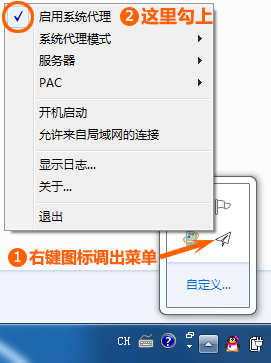

Windows上使用教程上使用Shadowsocks教程
点击加入QQ群 614909362
Windows
Step1.下载Windows下的Shadowsocks软件
shadowsocks下载
Step2.下载后解压，解压后运行Shadowsocks
Step3.首次运行，会弹出编辑服务器窗口，根据节点提供的信息，正确填写服务器地址、端口、密码和加密方式，然后点确定

点确定后，右下角弹出提示
Step4.右键程序图标，弹出主菜单，勾选“启用系统代理”

推荐使用扫描二维码。